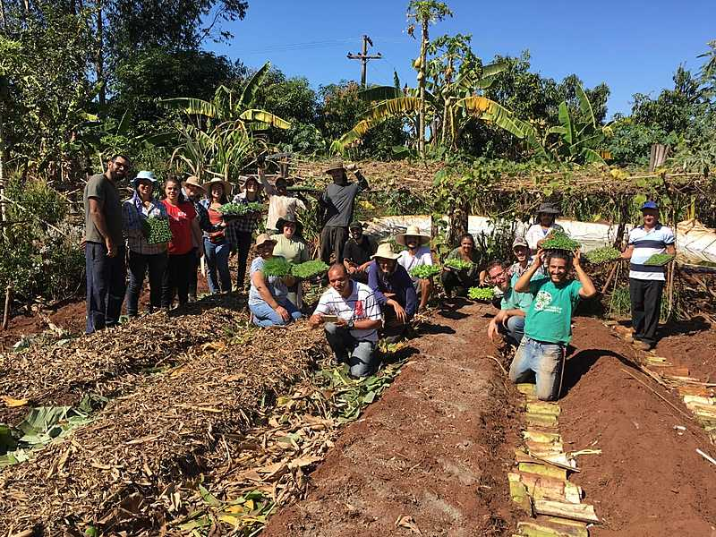
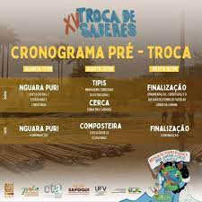
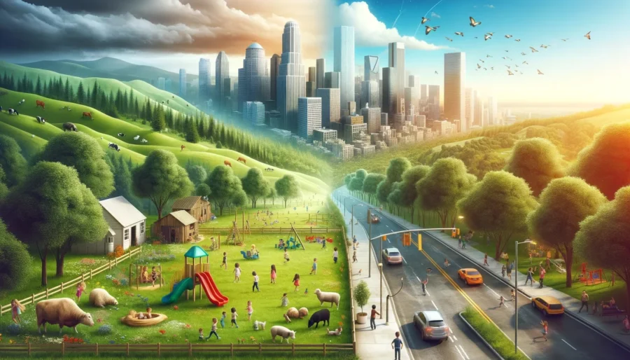

Metas: Passar na faculdade, ser bem sucedida, ser cada dia mais feliz, ter minha clínica e ter uma família linda
Meus projetos
Tecnologia na agricultura
Aqui você a importância da tecnologia na agricultura

união entre ambos
Aqui você verá a união entre eles

Troca de saberes
Aqui você vera as trocas de saberes
Minha Biblioteca: Uma Webpage Personalizada
A tecnologia desempenha um papel crucial na agricultura, impulsionando avanços em produtividade, sustentabilidade e qualidade dos alimentos. Ela permite a produção mais eficiente,
a otimização do uso de recursos e a redução de desperdícios, contribuindo para um futuro mais sustentável para o setor.
Agricultura de Precisão:
A combinação de sensores, drones, GPS e softwares de gestão permite um monitoramento preciso das lavouras, identificando áreas com necessidades específicas e otimizando o uso de insumos
como fertilizantes, água e pesticidas.
Inteligência Artificial (IA) e Big Data:
grandes volumes de dados por meio da IA permite a identificação de padrões e tendências, auxiliando na tomada de decisões estratégicas e na otimização de processos.
Máquinas Autônomas:
Tratores e colheitadeiras autônomas reduzem a necessidade de mão de obra, aumentam a eficiência e minimizam erros, contribuindo para a otimização do tempo e recursos.
Internet das Coisas (IoT):
A conectividade de dispositivos e sistemas permite o monitoramento remoto e o controle automatizado de diversos processos, como irrigação, temperatura e umidade do solo.
Aumento da Produtividade:
A agricultura de precisão e a automação permitem produzir mais com menos recursos, otimizando o uso de insumos e reduzindo perdas.
Redução de Custos:
A otimização do uso de recursos e a redução de erros e perdas contribuem para a redução de custos de produção e operação.
Melhora da Qualidade dos Produtos:
O monitoramento preciso e o controle automatizado garantem a qualidade dos produtos e reduzem o risco de contaminação
Sustentabilidade Ambiental:
A agricultura de precisão e o uso eficiente de recursos contribuem para a redução do impacto ambiental e a preservação dos recursos naturais.
Maior Competitividade:
A adoção de tecnologias modernas permite que os agricultores se tornem mais competitivos no mercado, oferecendo produtos de alta qualidade e competitividade.
Minha Biblioteca: Uma Webpage Personalizada
A união do campo com a cidade é crucial para o desenvolvimento de ambas as regiões e a sociedade como um todo. O campo abastece as cidades com alimentos e matérias-primas, enquanto as cidades oferecem mercados consumidores e serviços. Essa interdependência garante a segurança alimentar, impulsiona a economia e contribui para a preservação ambiental.
Interdependência e Benefícios:
Segurança Alimentar:
A produção rural é fundamental para garantir o acesso a alimentos e a sobrevivência da população urbana.
Desenvolvimento Econômico:
A colaboração entre campo e cidade pode impulsionar o desenvolvimento econômico de ambas as regiões, criando oportunidades de trabalho e renda.
Preservação Ambiental:
O campo pode ser um importante aliado na preservação do meio ambiente, enquanto a cidade pode contribuir para a adoção de práticas sustentáveis.
Integração e Solidariedade:
A união do campo com a cidade pode promover a integração social e a solidariedade entre os diferentes grupos de pessoas, criando uma sociedade mais justa e igualitária.
Oportunidades de Desenvolvimento:
Agricultura Urbana:
A agricultura urbana pode fortalecer a relação entre campo e cidade, fornecendo alimentos frescos e locais, além de gerar renda para a população.
Turismo Rural:
O turismo rural pode impulsionar a economia das áreas rurais, oferecendo oportunidades de geração de renda e desenvolvimento para a população.
Novas Tecnologias:
A adoção de novas tecnologias no campo pode melhorar a eficiência da produção e reduzir o impacto ambiental, ao mesmo tempo em que as cidades podem oferecer apoio e investimento para essas inovações.
Desafios e Considerações:
Êxodo Rural:
O êxodo rural pode gerar problemas para as áreas rurais, como a falta de mão de obra e a perda da identidade cultural, e é importante buscar soluções para reverter essa tendência.
Desigualdades Sociais:
As desigualdades sociais entre campo e cidade podem gerar conflitos e dificuldades para a construção de uma relação harmoniosa entre as duas regiões, e é fundamental buscar a igualdade de oportunidades.
Mudanças Climáticas:
As mudanças climáticas podem impactar a produção agrícola e a vida nas áreas rurais, e é importante buscar soluções para mitigar esses impactos e garantir a segurança alimentar e o desenvolvimento sustentável.

Minha Biblioteca: Uma Webpage Personalizada
A "Troca de Saberes" entre o campo e a cidade refere-se a eventos e iniciativas que visam promover a comunicação e o compartilhamento de conhecimentos entre diferentes grupos sociais, com foco na agroecologia, agricultura familiar e questões relacionadas ao desenvolvimento rural e urbano.
Elaboração:
O que é:
A "Troca de Saberes" é um processo de diálogo, onde pessoas do campo e da cidade, com diferentes experiências e conhecimentos, se reúnem para aprender uns com os outros, compartilhar práticas e experiências, e construir soluções para problemas comuns.
Foco:
A "Troca de Saberes" frequentemente enfatiza a importância da agricultura familiar, agroecologia, produção de alimentos sustentáveis e a relação entre o campo e a cidade em termos de segurança alimentar, desenvolvimento regional e qualidade de vida.
Como funciona:
A "Troca de Saberes" pode ocorrer através de diversos eventos, como feiras, encontros, workshops, palestras, visitas técnicas, e outros formatos que facilitem a interação entre os participantes.
Benefícios:
A "Troca de Saberes" contribui para o fortalecimento de redes de apoio entre comunidades rurais e urbanas, a disseminação de práticas sustentáveis, a promoção da autonomia produtiva, a valorização da cultura local e a construção de um futuro mais justo e equitativo.
Exemplos:
A Universidade Federal de Viçosa (UFV) promove a "Troca de Saberes" como parte da Semana do Fazendeiro, um evento que reúne estudantes, pesquisadores, produtores rurais e membros de movimentos sociais para discutir a agroecologia e a agricultura familiar. Outras iniciativas semelhantes acontecem
em diferentes regiões do Brasil, promovendo a troca de experiências e conhecimentos entre o campo e a cidade.
A "Troca de Saberes" entre o campo e a cidade refere-se a eventos e iniciativas que visam promover a comunicação e o compartilhamento de conhecimentos entre diferentes grupos sociais, com foco na agroecologia, agricultura familiar e questões relacionadas ao desenvolvimento rural e urbano.
Elaboração:
O que é:
A "Troca de Saberes" é um processo de diálogo, onde pessoas do campo e da cidade, com diferentes experiências e conhecimentos, se reúnem para aprender uns com os outros, compartilhar práticas e experiências, e construir soluções para problemas comuns.
Foco:
A "Troca de Saberes" frequentemente enfatiza a importância da agricultura familiar, agroecologia, produção de alimentos sustentáveis e a relação entre o campo e a cidade em termos de segurança alimentar, desenvolvimento regional e qualidade de vida.
Como funciona:
A "Troca de Saberes" pode ocorrer através de diversos eventos, como feiras, encontros, workshops, palestras, visitas técnicas, e outros formatos que facilitem a interação entre os participantes.
Benefícios:
A "Troca de Saberes" contribui para o fortalecimento de redes de apoio entre comunidades rurais e urbanas, a disseminação de práticas sustentáveis, a promoção da autonomia produtiva, a valorização da cultura local e a construção de um futuro mais justo e equitativo.
Exemplos:
A Universidade Federal de Viçosa (UFV) promove a "Troca de Saberes" como parte da Semana do Fazendeiro, um evento que reúne estudantes, pesquisadores, produtores rurais e membros de movimentos sociais para discutir a agroecologia e a agricultura familiar. Outras iniciativas semelhantes acontecem em diferentes regiões do Brasil, promovendo a troca de experiências e conhecimentos entre o campo e a cidade.